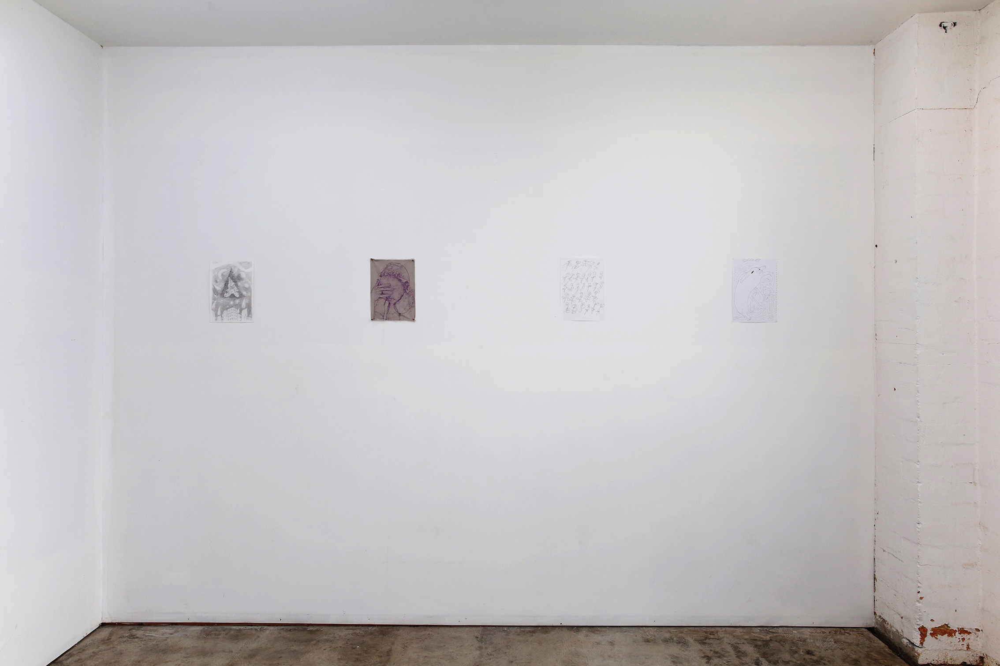
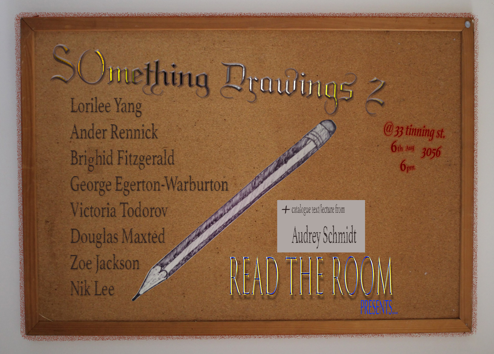
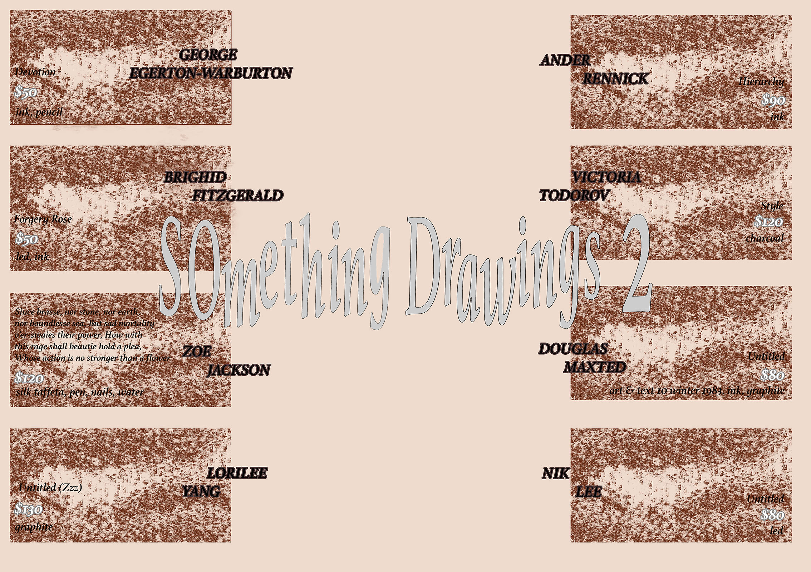
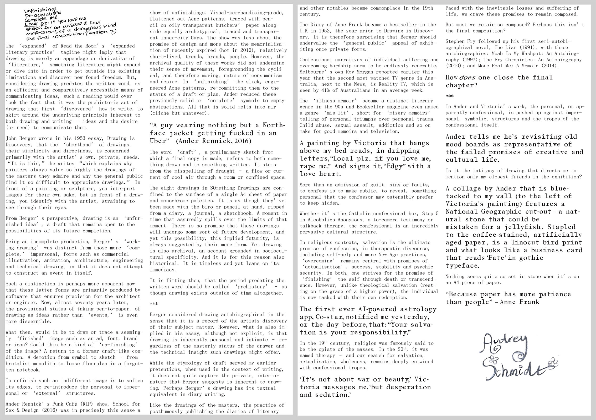
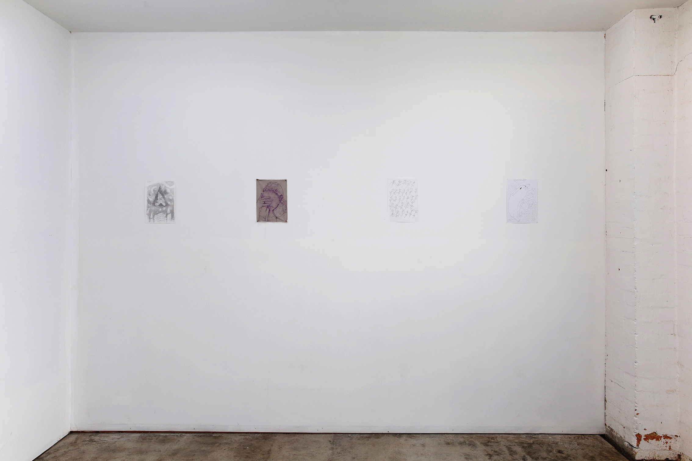
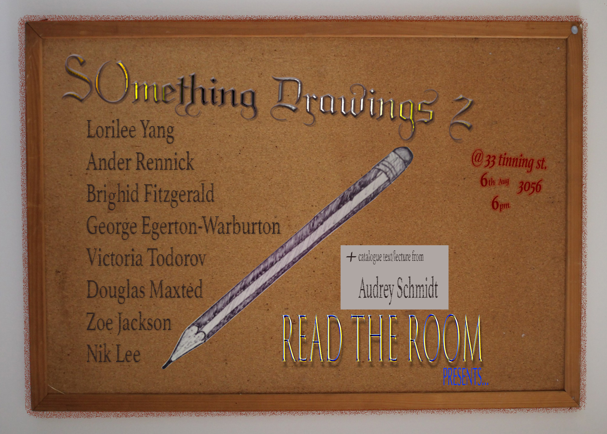
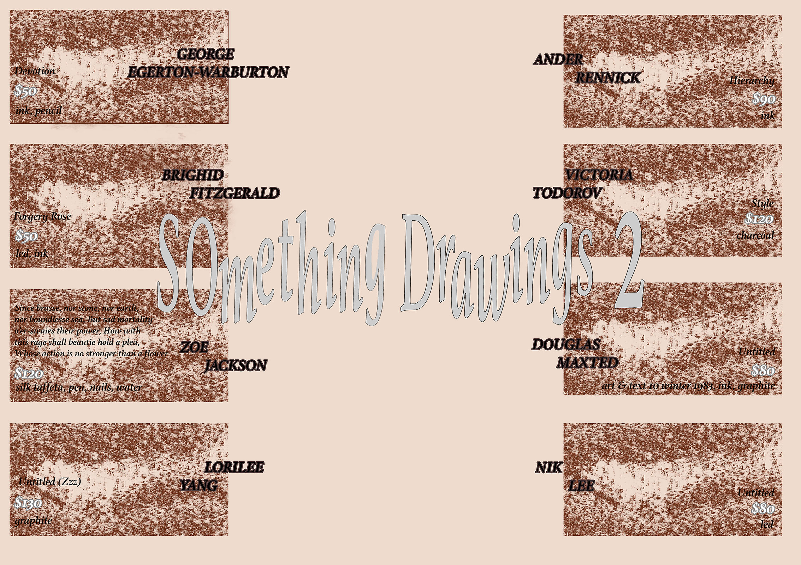
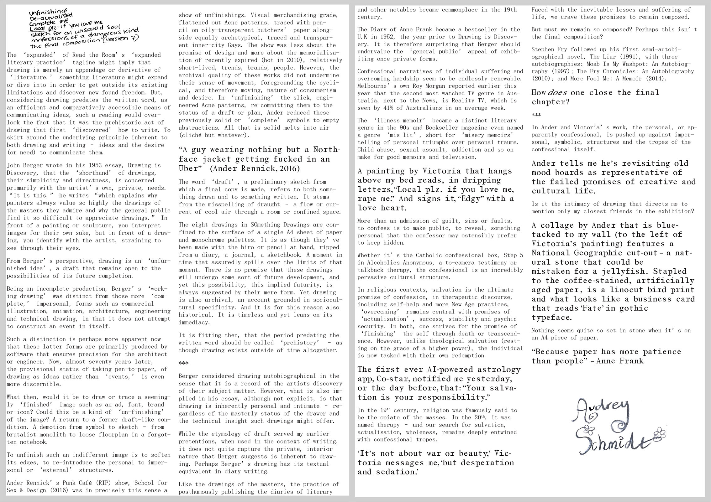

Opening reception for Something Drawings series2 presented by Read the Room in Melbourne, Audrey Schmidt presentation of catalogue text / RTR lecture series. Curated by Carmen-Sibha Keiso. 6.8.2019
@readtheroom_ ANDER RENNICK BRIGHID FITZGERALD DOUGLAS MAXTED GEORGE EGERTON-WARBURTON LORILEE YANG NIK LEE VICTORIA TODOROV ZOE JACKSON
+ catalogue text as part of our RTR LECTURE SERIES by: AUDREY SCHMIDT
'Read the Room' is an expanded literary practice space focusing on writers and artists working both on an off the page. Co-directed by Kat Capel and Carmen Keiso, the initiative runs workshopping, reading, and exhibition events. ©
 






